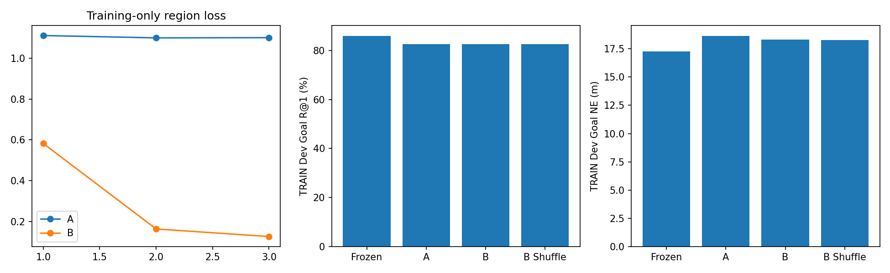
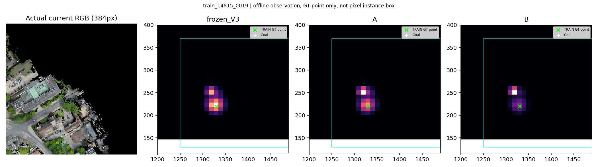
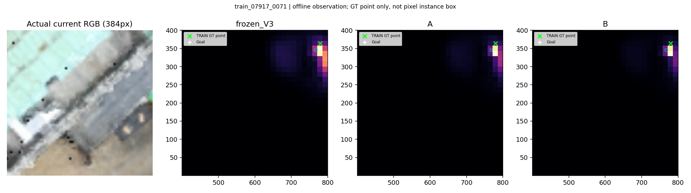
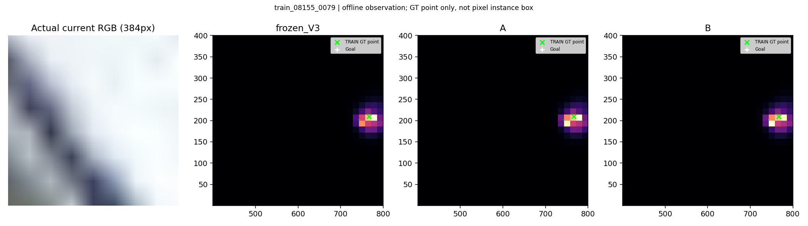
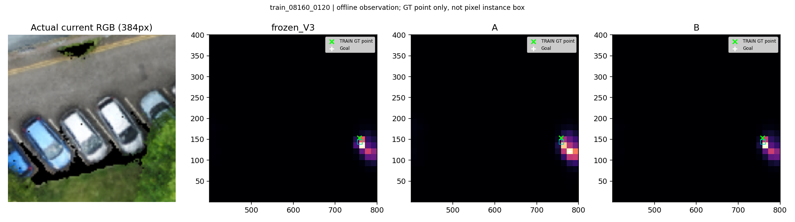
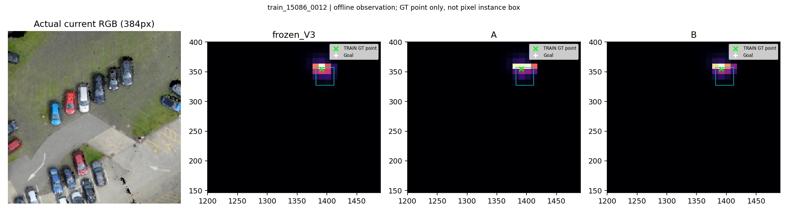
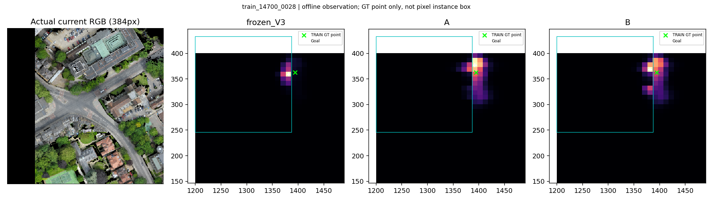

全部为TRAIN离线；原权重不变，无新SR。GT只在事后地图显示。
中文报告
Next to the intersection of Harvey Road and Hills Road there is a dirt parking lot with 5 cars lined up on one side facing 4 cars lined up on the other side. On the side with 4 cars, this is the car in between the only white car and the gray car.

The building thats back side shares a wall with The Scholars Gaden. It has six green, four blue, and multiple yellow and white bins against the wall behind it as well as a white utility van. The roof has different styles and types beside each other including a round tundra roof a roof of twelve gray squares in a box shape and a light blue green house like roof/ room.

A narrow parking area around the building named Inglis A building. Many cars are parked in the parking area.

On the right side of The Fen Causeway, this parking lot has several cars, some blue , parked in it.

Very large parking lot area encompassing both a grass and gravel area off Drosier Road next to the Gonville Hotel

The small brown building in the large parking lot on Drosier Road that has a black car and red car parked on the side of it.
